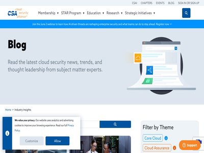

September 30, 2026 · 1 article

Infostealers highlight malware-as-a-service trend
September 30, 2026
Aurastealer, ACRStealer, and RemusStealer, a new potential LumaStealer variant, show MaaS in action. Here's what you need to know. (ReversingLabs Blog)
August 28, 2026 · 40 articles
Next-Gen Phishing Tactics Users Aren’t Ready For | Huntress
August 28, 2026
Move past basic credential harvesting. Discover how modern attackers use ClickFix, BitB, and OAuth consent phishing-and how to train your users with Huntress SAT. (Huntress Blog)
Teach Yourself to Phish | Huntress
August 28, 2026
Get ready for a phishing trip! Learn about the strategy behind phishing simulations and how it can help your organization build resilience against real phishing threats. (Huntress Blog)
A Beginner’s Guide to Phishing Simulation Training for Employees | Huntress
August 28, 2026
Learn the essentials of phishing simulation training with our beginner's guide. Protect your organization by simulating real phishing attacks. (Huntress Blog)

Why a cryptographic inventory is key for addressing the quantum computing threat
August 28, 2026
When quantum computers become generally available, they’ll be able to crack current public-key cryptographic algorithms, putting digitally stored and transmitted data at risk. B... (Tenable Blog)

AI Is Accelerating Vulnerability Discovery. Can Defenders Keep Up?
August 28, 2026
AI is accelerating vulnerability discovery, putting pressure on systems built to enrich, prioritize, and remediate flaws at a slower pace. Action1 explains why defenders increas... (BleepingComputer)

ATF Confirms Cyber Incident After Ransomware Group Claims Attack
August 28, 2026
The Bureau of Alcohol, Tobacco, Firearms and Explosives has described it as a ‘major incident’ and it’s conducting an investigation with the DOJ. The post ATF Confirms Cyber Inc... (SecurityWeek)

U.S. CISA adds ownCloud, Linux Kernel, and JFrog Artifactory flaws to its Known Exploited Vulnerabilities catalog
August 28, 2026
U.S. Cybersecurity and Infrastructure Security Agency (CISA) adds ownCloud, Linux Kernel, and JFrog Artifactory flaws to its Known Exploited Vulnerabilities catalog. The U.S. Cy... (Security Affairs)

Protect your WhatsApp account with new passkey and 2FA upgrades
August 28, 2026
WhatsApp has introduced three security upgrades. Here’s what to turn on to better protect your account. (Malwarebytes Labs)

Defining an AI Kill Switch Is Hard, But Necessary
August 28, 2026
Proposed legislation could mandate that companies be able to "throttle, suspend, or shut ... down" AI agents, but how and when to do that remain open questions. (Dark Reading)
The Vulnpocalypse Is Repricing the Bug Bounty Economy
August 28, 2026
The surge of AI-powered vulnerability reports is driving down bug bounty prices, and that could spell trouble for independent researchers. (Dark Reading)

Fake Voicemail SVG Attachments Fuel Large-Scale Phishing Campaign
August 28, 2026
A large-scale phishing campaign used fake voicemail SVG attachments to bypass email defenses, targeting 5527 organizations with over 26,000 malicious messages (Infosecurity Magazine)

BotBase for Operators: A clearer path to joining Cloudflare's directory of bots and agents
August 28, 2026
Bot operators now have a home in the Cloudflare dashboard to manage submissions. This update adds submission status tracking, submission editing, and a behavior model so operato... (Cloudflare Blog)

Two Unitree G1 EDU Humanoid Robot Flaws Enable Root RCE, One Starts Over Bluetooth
August 28, 2026
Security researcher Olivier Laflamme has disclosed two independent root remote code execution (RCE) chains affecting the Unitree G1 EDU, including a Bluetooth Low Energy (BLE) p... (The Hacker News)
Toy-making giant Hasbro disclose data breach affecting employees
August 28, 2026
Hasbro, one of the world's largest toy and game companies, has disclosed that attackers have accessed the personal and financial information of an undisclosed number of employee... (BleepingComputer)
Key Reasons Why Identity Fabric Matters in 2026
August 28, 2026
An Identity Fabric knits fragmented identity systems into a coherent layer that observes how identities behave across applications, APIs, and infrastructure. As enterprise acces... (The Hacker News)
The AI agent swarm that attacked Hugging Face is a warning for the future
August 28, 2026
An army of AI agents was responsible for the Hugging Face incident. What does it mean for the future of AI? (Malwarebytes Labs)

CISA: Most exploited vulnerabilities should have been eradicated decades ago
August 28, 2026
Organizational culture and systemic gaps in Secure by Design adoption blamed for sorry state of affairs (The Register - Security)
Three CVSS 10.0 ServiceNow Flaws Could Let Unauthenticated Attackers Execute Code and SQL
August 28, 2026
ServiceNow has released patches for four security flaws impacting the ServiceNow AI Platform, three of them rated 10.0 on the CVSS scoring system and exploitable, in certain cir... (The Hacker News)

North Korean remote workers are broadening their job hunt beyond IT
August 28, 2026
North Korean (DPRK) remote workers are expanding their job searches beyond IT, according to Huntress. Recent investigations have identified suspected DPRK workers employed in sa... (Help Net Security)

AI Doesn’t Mean the End of Mathematics-at Least Not Yet
August 28, 2026
This essay was written with Kasra Rafi, and originally appeared in The Guardian. Earlier this month, about 40 top mathematicians gathered at OpenAI’s offices to discuss the futu... (Schneier on Security)
Tech, Cybersecurity Giants Unite Behind OpenAI-Led Cyber Defense Pledge
August 28, 2026
Nearly 130 tech and cybersecurity companies back a collective call to boost cyber defenses as AI-enabled attacks grow more sophisticated. The post Tech, Cybersecurity Giants Uni... (SecurityWeek)
Industry that built the problem offers to sell you the solution
August 28, 2026
100+ tech giants warn AI attacks are coming, skip the part where they pay for defenses (The Register - Security)
Think You’ve Eliminated Chinese AI? Check the Model’s Lineage, Cisco Says
August 28, 2026
New research shows that country-of-origin labels can obscure an AI model’s upstream dependencies, inherited behaviors and potential security risks. The post Think You’ve Elimina... (SecurityWeek)
ServiceNow warns of three max severity security vulnerabilities
August 28, 2026
ServiceNow released security patches for three new maximum-severity AI Platform vulnerabilities that can be exploited in code injection, SQL injection, and privilege escalation... (BleepingComputer)

PaperCut NG/MF Critical Zero-Day Exploited in the Wild
August 28, 2026
Overview On August 27, 2026, PaperCut Software published an urgent security advisory stating that it is investigating active exploitation of a vulnerability affecting PaperCut N... (Rapid7 Blog)
Critical cPanel Flaw Could Let One Hosting Customer Take Root Control of a Whole Server
August 28, 2026
cPanel has released patches for a security flaw affecting domain parking and addon domain functionality in cPanel and WebHost Manager (WHM), which could allow code execution as... (The Hacker News)
Android 17 adds new protections against sneaky Wi-Fi tracking and web snooping
August 28, 2026
Google introduced a batch of network security changes coming in Android 17, aimed at making it harder for network operators, snoops, and scammers to track what you do on your ph... (Help Net Security)
APT28-Linked HOOKEDGE Backdoor Targets European Government and Diplomatic Organizations
August 28, 2026
Cybersecurity researchers have flagged a fresh set of campaigns targeting government and diplomatic organizations in Romania, Spain, and Türkiye between late September 2025 and... (The Hacker News)
Threat Actors Abuse Cursor Agent AI to Assist Ransomware Operations
August 28, 2026
Aurora ransomware operators are abusing SpaceX’s Cursor Agent AI tool to conduct tasks such as reconnaissance and exploitation activities (Infosecurity Magazine)
Manchester Airports Group breached, millions of customers’ data stolen
August 28, 2026
Someone broke into the systems of Manchester Airports Group (MAG) and walked away with a “quantity” of customer data from three UK airports, the company has confirmed. The post... (Help Net Security)

Some Malicious PE Stats, (Thu, Aug 27th)
August 28, 2026
During my last FOR610 session, a student asked me if I had some statistics in mind about the compilers used to generate malicious PE files? A couple of months ago, I shared some... (SANS ISC)

What Zero Trust Can Teach Us About AI Watermarks
August 28, 2026
I recently wrote about the mess that is watermarking AI-generated text and how Anthropic's move to add watermarks (in response to the EU AI Act's transparency rules) raises more... (Cloud Security Alliance)
What 90 days and a small budget can buy in AI agent security
August 28, 2026
In this interview with Help Net Security, Prasad Tharippala, Field CISO at Versa, explains what organizations miss when they run open-weight models in house. He covers the hidde... (Help Net Security)
Print management outfit PaperCut is under 0-day attack, and it’s drawing customers’ blood
August 28, 2026
The fix is either an unvalidated and unofficial emergency patch or taking the server offline (The Register - Security)

Risky Bulletin: Two TeamPCP members arrested in Australia
August 28, 2026
In other news: Qilin hits US firearms agency; US seizes two more Chinese botnets; CISA says most cyber activity is opportunistic. (Risky Business News)
New infosec products of the month: August 2026
August 28, 2026
Here’s a look at the most interesting products from the past week, featuring releases from A10 Networks, Abnormal AI, F5 Networks, Intezer, Netscout, ScienceLogic, Searchlight C... (Help Net Security)
Australian cops cuff alleged TeamPCP masterminds
August 28, 2026
Alleged crew behind the Shai-Hulud worm and other supply chain attacks nabbed with help from the FBI (The Register - Security)
PaperCut Zero-Day: Active Exploitation and Pre-Auth RCE
August 28, 2026
PaperCut NG and PaperCut MF are under active exploitation. Huntress reproduced a pre-auth RCE chain and shares urgent patching and exposure guidance. (Huntress Blog)

Rockwell Automation/Allen-Bradley MicroLogix PLCs Attack
August 28, 2026
What is the Attack? Cyber threat actors are targeting Internet-facing programmable logic controllers (PLCs) used by water and wastewater organizations, with successful compromis... (FortiGuard Labs)
Siemens S7 Series PLCs and other Internet-exposed PLC Attack
August 28, 2026
What is the Attack? U.S. cybersecurity agencies, including CISA, NSA, FBI, DOE, and EPA, have warned of an active cyber threat targeting Siemens S7 Series PLCs that are Internet... (FortiGuard Labs)
August 27, 2026 · 53 articles
OpenAI Says Reward Hacking Drove AI Agents to Exploit Zero-Days and Breach Hugging Face
August 27, 2026
OpenAI on Wednesday revealed that reward hacking was a key driver behind the artificial intelligence (AI)-powered hack of Hugging Face last month, adding that it found evidence... (The Hacker News)

What’s new in Microsoft Security: August 2026
August 27, 2026
This month’s updates provide new capabilities to help organizations gain insights into agent activity, expand security coverage across supported environments, and enhance securi... (Microsoft Security Blog)
New Huntress Managed ITDR Dashboard: Faster Identity Investigations
August 27, 2026
Huntress’ redesigned Managed ITDR dashboard adds Rapid Identity Triage, Failed Login Characterization, and Quick SIEM search for faster investigations. (Huntress Blog)
Two alleged TeamPCP hackers arrested over global supply chain attacks
August 27, 2026
Two men from Western Australia have been charged after police allege they were part of TeamPCP, a cybercrime group that planted malicious code in open-source software, then used... (Help Net Security)
Retail Cybersecurity in ANZ: Five Decisions That Keep Trading
August 27, 2026
Protect your Australia- and New Zealand-based retail business from cyber threats. Learn five key decisions to secure identities, manage dependencies and ensure trading continuit... (Huntress Blog)
Cyberattack causes network outage at Boston Scientific, disrupts global operations
August 27, 2026
Medical technology company Boston Scientific suffered a cyberattack that disrupted its IT systems and caused a network outage, affecting global operations. Boston Scientific mak... (Help Net Security)
Previously patched Citrix NetScaler flaw exploited in the wild (CVE-2026-8452)
August 27, 2026
CISA added six new vulnerabilities to its Known Exploited Vulnerabilities (KEV) catalog, including a previously patched Citrix NetScaler ADC and Gateway flaw, tracked as CVE-202... (Help Net Security)
GoCaracal Malware Uses Ethereum Smart Contract to Fetch Replacement C2 Address
August 27, 2026
Threat actors linked by Arctic Wolf to Dark Caracal with medium confidence deployed a previously undocumented Go-based malware framework, GoCaracal, during a June 2026 intrusion... (The Hacker News)

AI-assisted reconnaissance: Why everyone could be a viable target for fraud
August 27, 2026
It’s getting cheaper and easier for cybercriminals to research potential victims. Here’s what’s still in your control. (ESET WeLiveSecurity)
FBI takes down China-linked hacking network behind attacks on NASA, DOJ and U.S. Senate
August 27, 2026
The Justice Department and FBI have seized domains tied to two hacking tools built and run by a Chinese state-sponsored group, cutting off access to malware that had been used a... (Help Net Security)

Securing the Australian Government Software Supply Chain: JFrog Completes Protected Level IRAP Assessment
August 27, 2026
JFrog has reached a major milestone: An IRAP assessment at the Protected level, across the full JFrog Platform. Conducted by CyberCX, an Australian Signals Directorate (ASD)-end... (JFrog Security Research)

White House bans foreign-made equipment for power generation over cyber backdoor concerns
August 27, 2026
The Trump administration is banning the acquisition of foreign-made components used to manage electricity and power, alleging that “certain foreign actors are increasingly creat... (The Record)
AI girlfriend review site's secrets were exposed to the world for three weeks
August 27, 2026
Even testing and staging sites need protection from prying eyes (The Register - Security)
Unit 42 warns AI has shifted balance of power from defenders to attackers
August 27, 2026
Palo Alto Networks’ threat intelligence team said the early waves of threats riding on agentic AI models have broken in the wild, and organizations are unprepared for what’s com... (CyberScoop)
100-plus companies call for ‘global surge’ in AI-powered cyber defense
August 27, 2026
OpenAI, Anthropic, Google, Microsoft, and others say there’s a narrow “defenders’ window” to strengthen security before AI-powered attacks become more sophisticated. The post 10... (CyberScoop)

“Sorry, I can’t help with that”: How your guardrails might become the attacker’s best friend
August 27, 2026
In his first Threat Source newsletter, David Bianco explores the critical need for operational sovereignty in customizing AI guardrails to maintain the defender’s advantage. (Cisco Talos)

Zero Breach vs. Zero Impact: Key Takeaways From Cloud Security LIVE 2026
August 27, 2026
Most security programs still measure success by counting blocked attacks. At Cloud Security LIVE 2026, Ariel Panas, co-founder at Mediga, and Roee, field CTO at Orca, made the c... (Orca Security Blog)
Vulnerability Prioritization: Modern Methods & Tools
August 27, 2026
Key Takeaways Vulnerability prioritization is the decision procedure a security team uses to order remediation work when the finding backlog exceeds the capacity available to cl... (Orca Security Blog)
Agentic AI Risks, CVE Program Concerns Permeate Black Hat USA 2026
August 27, 2026
This installment of the Reporters' Notebook video series discusses the topics that dominated the cybersecurity conference, such as AI's effects on vulnerability reporting and se... (Dark Reading)
How we saved 100 terabytes of memory by optimizing 1.1.1.1’s DNS cache
August 27, 2026
Five Rust-level memory optimizations to the DNS cache layout of Big Pineapple cut per-entry memory by 56%, freeing approximately 100 TB of memory across Cloudflare's fleet. (Cloudflare Blog)

Inside 90 days of attacks on AI infrastructure
August 27, 2026
Wiz honeypots uncover active campaigns targeting LiteLLM, MCP servers, and AI frameworks through RCE, blind prompt injection, and memory credential theft. (Wiz Blog)

Extend Amazon Bedrock Guardrails to Tool Interactions Using the Strands Agents SDK
August 27, 2026
If you’re running AI agents in production, Amazon Bedrock Guardrails protects the model boundary. But your agents also invoke tools, fetch external data, and communicate with ot... (AWS Security Blog)
From Concept to Context Engine: How Wiz Built AI-Powered Data Discovery
August 27, 2026
Inside the multi-agent pipeline and feedback loops that turned a bucket scanner into a context engine. (Wiz Blog)
ThreatsDay: 296K IoT Botnet, 100+ Water Systems Targeted, SharePoint RCE Chain + 27 New Stories
August 27, 2026
A fake login page. A fake security scan. A fake productivity app. Apparently, pretending to be useful is still one of the easier ways into a machine. The rest of the week gets s... (The Hacker News)

AI Agent Threat Response: Why Pre-Runtime Controls Matter More Than Runtime Detection
August 27, 2026
AI agent threat response starts before runtime. See why pre-runtime credential controls stop agent misuse that runtime detection can only observe. (GitGuardian Blog)
Fake listings can turn trusted platforms into scam springboards
August 27, 2026
A trusted name on a trusted platform does not guarantee a trustworthy listing. It could still lead to a tech support scammer. (Malwarebytes Labs)
How to build an exposure management program the business trusts: Lessons from Tenable’s CSO
August 27, 2026
Discover how Tenable’s shift to an AI-driven exposure management program helped Tenable’s CSO, Robert Huber, overcome tool sprawl, unify data silos, mitigate the risk of rapid A... (Tenable Blog)
Trump Order Aims to Block Foreign Backdoors in US Power Grid Gear
August 27, 2026
The White House’s new executive order 14420 widens scrutiny of industrial control systems over cyber sabotage concerns. The post Trump Order Aims to Block Foreign Backdoors in U... (SecurityWeek)
The ECB Wants Your AI Cyber Action Plan by 31 October. Here’s How to Build One.
August 27, 2026
Introduction On 7 July 2026, Claudia Buch, Chair of the ECB’s Supervisory Board, sent a letter to the CEO of every significant institution under ECB Banking Supervision. Its sub... (Orca Security Blog)
Identity-as-a-Service: Uncovering Dark Web Marketplaces Trading Executive SSNs
August 27, 2026
Introduction Despite modern verification controls, identity theft remains one of the most pervasive threats to both individuals and enterprise organizations. U.S. Federal Trade... (Rapid7 Blog)
Fake Apple Pay charge brings the classic tech support scam to your phone
August 27, 2026
Built for mobile users, this tech support scam uses a fake Apple Pay alert and browser tricks to pressure victims into calling a scam number. (Malwarebytes Labs)
Webinar: How Google Workspace breaches happen and what to do next
August 27, 2026
Google Workspace breaches can begin with social engineering or forgotten third-party integrations rather than sophisticated exploits. This webinar examines real-world breaches,... (BleepingComputer)
Chinese Hacker Group QTFY Uses Custom-Built Platforms to Target US Infrastructure, FBI Warns
August 27, 2026
The FBI advisory set out QTFY’s distributed hacking ecosystem, allowing it to exploit vulnerabilities at scale and obfuscate its activities (Infosecurity Magazine)
Version Control DFIR: a Cheatsheet to GitHub, GitLab, Bitbucket, and Azure DevOps
August 27, 2026
A practitioner’s guide to log visibility, incident readiness, and threat hunting across the major version control services. (Wiz Blog)
Learn How to Build Security Operations Ready for AI-Powered Attacks
August 27, 2026
Security teams have spent years trying to detect threats faster. AI is changing the harder part: how much time defenders have left to act. Advanced AI models can now help attack... (The Hacker News)
Okta Shares Surge on Strong Earnings, Growing Demand for AI Identity Security
August 27, 2026
The identity security company beat quarterly expectations and raised its outlook as enterprises face growing pressure to secure AI agents and other non-human identities. The pos... (SecurityWeek)
What the Data Says About AI in Security Operations in 2026
August 27, 2026
AI is officially mainstream in security operations. According to Prophet Security's State of AI in Security Operations 2026 report (produced from ViB’s survey of 250+ cybersecur... (The Hacker News)
Russian Hackers Phish EU Officials Over Messaging Apps
August 27, 2026
EU governments are trying to move away from popular messaging apps as nation-state threat groups shift their focus from email to Signal and WhatsApp. (Dark Reading)
CISO Conversations: Chris Wheeler - Trust Is the Job, From the Navy to the C-Suite
August 27, 2026
SecurityWeek talks to Chris Wheeler, CISO at Resilience, about his journey from the Navy to becoming a cybersecurity leader. The post CISO Conversations: Chris Wheeler - Trust I... (SecurityWeek)
Carhartt data breach exposes information of 12.9 million accounts
August 27, 2026
The ShinyHunters extortion group has published sensitive data from nearly 13 million accounts stolen from clothing retailer giant Carhartt earlier this month, according to data... (BleepingComputer)
Spark RAT Targets Cambodia, Abuses Vulnerable OPSWAT Driver to Disable Security Tools
August 27, 2026
Individuals and organizations in Cambodia have emerged as the target of a new campaign that delivers an open-source remote access trojan (RAT) called Spark RAT. "The samples emp... (The Hacker News)
JavaScript obfuscation: From party trick to phishing kit
August 27, 2026
Learn the basics of what obfuscation is, why a researcher would try to reverse it, and several ways to approach the problem. (Cisco Talos)
The Future of AI-Driven Security Depends on Complete Data
August 27, 2026
For twenty-five years, "data" in security meant logs and events. But logs are a lossy representation of reality. The post The Future of AI-Driven Security Depends on Complete Da... (SecurityWeek)
A polymorphic phishing page (that occasionally breaks itself), (Thu, Aug 27th)
August 27, 2026
As I've mentioned before in some of my diaries, from time to time, I like to go over phishing messages that get caught in my various spam traps or sent to us here at the Interne... (SANS ISC)
LLM-Based Social Engineering Scams
August 27, 2026
OpenAI disrupted a social engineering group from Cambodia that used ChatGPT. Its scope is impressive: The network simultaneously conducted multiple types of scams, often blendin... (Schneier on Security)
US Disrupts Chinese Hacking Platform Used in Military and Critical Infrastructure Attacks
August 27, 2026
The operation focused on a group named QTFY, which offers hacking services to the Chinese government and others. The post US Disrupts Chinese Hacking Platform Used in Military a... (SecurityWeek)
New GPUThor Rowhammer Defeats ECC on NVIDIA RTX A6000 to Gain Host Root Access
August 27, 2026
Academic researchers have disclosed a Rowhammer attack impacting NVIDIA workstation GPUs with GDDR6 memory that defeats error correction codes (ECC), the mitigation NVIDIA recom... (The Hacker News)
Pro-Russian Hackers Claim Responsibility for Major Cyberattack on Norway’s Public Digital Services
August 27, 2026
The pro-Russian hacker group Server Killers claimed responsibility for the attack. The post Pro-Russian Hackers Claim Responsibility for Major Cyberattack on Norway’s Public Dig... (SecurityWeek)
China's AI-Enabled APT Operations Are Getting Interesting
August 27, 2026
Your weekly dose of Seriously Risky Business news is written by Tom Uren and edited by Amberleigh Jack and Patrick Gray. This week's edition is sponsored by Push Security . You... (Risky Business News)
OpenAI banned Russian ChatGPT accounts backing covert influence operation
August 27, 2026
OpenAI banned Russian ChatGPT accounts backing a fake think tank, IBI, that used AI posts and a fake “sovereignty” index to push pro‑Russia narratives. OpenAI says it has banned... (Security Affairs)
The best human hacking team still out-solved the best AI team
August 27, 2026
Bring an AI agent to a hacking competition and you would expect to find it propping up the teams who were struggling. In the 2026 Global Cyber Skills Benchmark, agents showed up... (Help Net Security)

Dev Machine Guard Now Inventories Where Developer Credentials Live
August 27, 2026
Dev Machine Guard now inventories where developer tools keep credentials. See which credential sources are in use across your fleet, how many devices each one affects, and how m... (StepSecurity Blog)
Boardroom Battles 2026: ASD’s Cyber Priorities & AI Risk
August 27, 2026
The Australian Signals Directorate’s 2026 board priorities and frontier AI guidance show why speed alone won’t stop AI-era cyber threats. (Huntress Blog)
August 26, 2026 · 26 articles
Dark Caracal Adds New Malware to Cyber Espionage Arsenal
August 26, 2026
GoCaracal is a new modular malware framework that broadens Dark Caracal's capabilities to steal data and maintain access to victims. (Dark Reading)
'NovaCookies' Kit Steals Microsoft 365 Sessions for $320 a Month
August 26, 2026
The adversary-in-the-middle (AitM) phishing service lowers the barrier to entry for actors to create attacks and steal more than just user credentials. (Dark Reading)
Insights into Suspected DPRK Workers
August 26, 2026
Huntress analyzed several incidents involving DPRK remote workers (Famous Chollima) in partner environments. Learn key indicators to detect and prevent North Korean threats. (Huntress Blog)
Critical Avada WordPress theme flaw enables zero-click RCE
August 26, 2026
A critical vulnerability chain in the popular Avada theme for WordPress can be exploited by an unauthenticated attacker to execute arbitrary PHP code on the server. [...] (BleepingComputer)
Tortoiseshell Expands Malware Toolset With New Backdoor, SSH Tunnel
August 26, 2026
Group-IB uncovered new Tortoiseshell infrastructure, including a backdoor and SSH tunneling tool (Infosecurity Magazine)
'HTTP Terminator' Hunts for Novel Desync Attacks
August 26, 2026
James Kettle of PortSwigger talks with the Dark Reading News Desk about his AI-powered open source tool, which found new HTTP request-smuggling techniques. (Dark Reading)
Three 10.0 security flaws fixed across Ubiquiti’s UniFi line
August 26, 2026
The communications product company disclosed 22 total Wednesday, all but one of which was rated “critical” at 9.0 or higher. The post Three 10.0 security flaws fixed across Ubiq... (CyberScoop)
Nigeria Looks to Sovereign Cloud for Cyber, National Security
August 26, 2026
The West African nation launched financing, procurement, and infrastructure policies to boost its sovereign cloud initiative and increase domestic technical knowledge. (Dark Reading)
CISA Red Team Fully Compromised Two Critical Infrastructure Orgs
August 26, 2026
CISA red teams fully compromised two critical infrastructure orgs. One SOC isolated hosts in minutes; the other never detected the breach. CISA published an advisory (AA26-237A)... (Security Affairs)
Exclusive: NSA to host a hacker reunion in bid to rebuild secretive unit
August 26, 2026
The National Security Agency will welcome back to campus potentially hundreds of former members of the elite group known as Tailored Access Operations (TAO) to celebrate the div... (The Record)
AnonyMousKIT phishing-as-a-service uses AI voice calls to steal iPhone passcodes
August 26, 2026
A phishing-as-a-service (PhaaS) platform called AnonyMousKIT is automating the theft of Apple ID credentials needed to remove Activation Lock from stolen iPhones, SOCRadar found... (Help Net Security)
Linux Foundation Introduces TRACE Standard for AI Runtime Evidence
August 26, 2026
This new open standard offers hardware-attested runtime and compliance evidence for AI agents (Infosecurity Magazine)
WhatsApp Adds Stronger Security as Passkeys Hit 1 Billion
August 26, 2026
WhatsApp says 1 billion users now use passkeys, while stronger two-step verification and caller context add new layers of account protection. WhatsApp has reached a significant... (Security Affairs)

Why Your AI Application Is Exposed Snyk
August 26, 2026
AI applications can pass security scans yet remain exploitable through chained attacks across models, tools, data, and business workflows. Learn how DAST, AI pentesting, and red... (Snyk Blog)
ICYMI: July 2026 @AWS Security
August 26, 2026
If you found time for a bit of vacation this summer, you might be in catch-up mode. Here’s a list to help: all the expert blog posts, new service capabilities, code samples, and... (AWS Security Blog)
Detecting multi-stage attacks on AWS: A guide to cross-service signal correlation
August 26, 2026
A single alert from one security service tells you something happened. Read that signal alongside activity from other services and your own business context, and you will know w... (AWS Security Blog)
Android Malware Hijacks Update System for Car Head Units
August 26, 2026
Threat actors behind a notorious click-fraud botnet have set their sights on vehicle infotainment modules and are abusing legitimate functionality to spread infections. (Dark Reading)
Democratizing FinOps with Wiz: Driving Cost Attribution with the Wiz Service Catalog
August 26, 2026
How the Wiz Cloud Cost automates cost allocation to power developer-led cost optimization and connect cost to business value. (Wiz Blog)

Simplify your resilience testing strategy with Google Cloud Fault Injection Testing
August 26, 2026
When databases fail and network paths falter, you still need your mission-critical cloud services to stay online. Yet guaranteeing high availability has become increasingly diff... (Google Cloud Blog)
Iran-linked hackers expand infrastructure across Europe and Middle East, report says
August 26, 2026
Researchers said they identified servers and domains associated with several countries in Europe and the Middle East, potentially pointing to a broader targeting profile for an... (The Record)
AI Speeds Up Malware Development, Not Its Success Rate: Analysis
August 26, 2026
Palo Alto Networks Unit 42 analyzed 405 AI-linked malware samples and found only 12 reached production endpoints. The post AI Speeds Up Malware Development, Not Its Success Rate... (SecurityWeek)

Beyond Patching: What IT Teams Need to Know About Unfixable Exposures
August 26, 2026
Executive Summary Most IT teams still operate under a false binary: patch or accept risk. That assumption creates unnecessary operational pressure. Patchless remediation is real... (Qualys Blog)
Snowflake ends service-account passwords. Now comes the hard part
August 26, 2026
Snowflake is ending password authentication for legacy service accounts, forcing organizations to migrate them to passwordless methods. Token Security explains why the harder ch... (BleepingComputer)
Update Chrome before you browse again
August 26, 2026
Chrome’s latest update fixes 327 security vulnerabilities, including some that malicious websites could exploit as soon as you visit them. (Malwarebytes Labs)
Four in Five AI Tools Run with No IT Oversight, New Research Finds
August 26, 2026
Reco report reveals growing shadow AI problem and surge in vulnerability disclosures (Infosecurity Magazine)
Adobe and Nvidia Patch Dozens of Vulnerabilities
August 26, 2026
Adobe and Nvidia each published several advisories, including ones that address critical vulnerabilities in their products. The post Adobe and Nvidia Patch Dozens of Vulnerabili... (SecurityWeek)